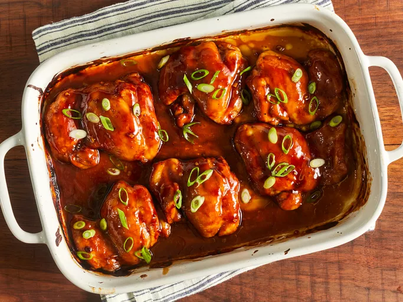

Garlic Fried Chicken
- Garlic Fried Chicken
- We have determined the nutritional value of oil for frying based on a retention value of 10% after cooking.
The exact amount may vary depending on cook time and temperature,
ingredient density, and the specific type of oil used.

Ingredients
- 2 teaspoons garlic powder, or to taste
- 1 teaspoon ground black pepper
- 1 teaspoon salt
- 1 teaspoon paprika
- ½ cup seasoned bread crumbs
- 1 cup all-purpose flour
- ½ cup milk
- 1 egg
- 4 skinless, boneless chicken breast halves - pounded thin
- 1 cup oil for frying, or as needed
Steps
- In a shallow dish, mix together the garlic powder, pepper, salt, paprika, bread crumbs and flour.
In a separate dish, whisk together the milk and egg.
- Heat the oil in an electric skillet set to 350 degrees F (175 degrees C).
Dip the chicken into the egg and milk,
then dredge in the dry ingredients until evenly coated.
- Fry chicken in the hot oil for about 5 minutes per side,
or until the chicken is cooked through and juices run clear.
Remove from the oil with a slotted spatula, and serve.
Fried Chicken
- Fried Chicken
- The nutrition data for this recipe includes the full amount of the breading ingredients.
The actual amount of the breading consumed will vary.
We have determined the nutritional value of oil for frying based on a retention value of
10% after cooking. The exact amount will vary depending on cooking time and temperature,
ingredient density, and the specific type of oil used.

Ingredients
- 30 saltine crackers
- 2 tablespoons all-purpose flour
- 2 tablespoons dry potato flakes
- 1 teaspoon seasoned salt
- ½ teaspoon ground black pepper
- 1 egg
- 6 skinless, boneless chicken breast halves
- 2 cups vegetable oil for frying
Steps
- Place crackers in a large resealable plastic bag; seal bag and crush crackers with a rolling pin until they are coarse crumbs. Add the flour, potato flakes, seasoned salt, and pepper and mix well.
- Beat egg in a shallow dish or bowl. One by one, dredge chicken pieces in egg, then place in bag with crumb mixture. Seal bag and shake to coat.
- Heat oil in a deep-fryer or large saucepan to 350 degrees F (175 degrees C).
- Fry chicken, turning frequently, until golden brown and juices run clear, 15 to 20 minutes.
Chicken Parmesan
- Chicken Parmesan
- Use high-quality prepared tomato sauce for a better result. You may substitute pesto or dried Italian herbs of your choice for basil or omit entirely.
Ingredients
- 4 skinless, boneless chicken breast halves
- salt and freshly ground black pepper to taste
- 2 large eggs
- 1 cup panko bread crumbs, or more as needed
- ¾ cup grated Parmesan cheese, divided
- 2 tablespoons all-purpose flour, or more if needed
- ½ cup olive oil for frying, or as needed
- ½ cup prepared tomato sauce
- ¼ cup fresh mozzarella, cut into small cubes
- ¼ cup chopped fresh basil
- ½ cup grated provolone cheese
- 2 teaspoons olive oil
Steps
- Preheat an oven to 450 degrees F (230 degrees C)
- Place chicken breasts between two sheets of heavy plastic (resealable freezer bags work well) on a solid, level surface. Firmly pound chicken with the smooth side of a meat mallet to a thickness of 1/2-inch.
- Season chicken thoroughly with salt and pepper. Using a sifter or strainer; sprinkle flour over chicken breasts, evenly coating both sides
- Beat eggs in a shallow bowl and set aside.
- Mix bread crumbs and 1/2 cup Parmesan cheese in a separate bowl, set aside.
- Dip a flour-coated chicken breast in beaten eggs. Transfer breast to the bread crumb mixture, pressing crumbs into both sides. Repeat for each breast. Let chicken rest for 10 to 15 minutes.
- Heat 1/2 inch olive oil in a large skillet on medium-high heat until it begins to shimmer. Cook chicken in the hot oil until golden, about 2 minutes per side. The chicken will finish cooking in the oven.
- Transfer chicken to a baking dish. Top each breast with 2 tablespoons tomato sauce. Layer each chicken breast with equal amounts of mozzarella cheese, fresh basil, and provolone cheese. Sprinkle remaining Parmesan over top and drizzle each with 1/2 teaspoon olive oil.
- Bake in the preheated oven until cheese is browned and bubbly and chicken breasts are no longer pink in the center, 15 to 20 minutes. An instant-read thermometer inserted into the center should read at least 165 degrees F (74 degrees C).
Chicken Cordon Bleu
- Chicken Cordon Bleu
- This entree is easy and delicious! It's one of my husband's favorites! Try to use the largest chicken breasts you can find so you'll be able to roll them easier.

Ingredients
- nonstick cooking spray
- 4 skinless, boneless chicken breast halves
- ¼ teaspoon salt
- ⅛ teaspoon ground black pepper
- 6 slices Swiss cheese
- 4 slices cooked ham
- ½ cup seasoned bread crumbs
Steps
- Gather all ingredients.
- Preheat oven to 350 degrees F (175 degrees C). Coat a 7x11-inch baking dish with nonstick cooking spray.
- Pound chicken breasts to 1/4 inch thickness.
- Sprinkle each piece of chicken on both sides with salt and pepper. Place 1 Swiss cheese slice and 1 ham slice on top of each breast.
- Roll up each breast and secure with toothpicks.
- Place in the prepared baking dish and sprinkle chicken evenly with bread crumbs.
- Bake in the preheated oven until chicken is no longer pink, 30 to 35 minutes.
- Remove from the oven, and place 1/2 Swiss cheese slice on top of each breast.
- Return to the oven until cheese has melted, 3 to 5 minutes. Remove toothpicks and serve immediately.
Baked Teriyaki Chicken
- Baked Teriyaki Chicken
- This teriyaki chicken recipe uses a homemade teriyaki sauce to glaze chicken thighs that are baked in the oven for the most delicious sticky chicken. This is a much-requested recipe in our house! Easy to double for a large group.

Ingredients
- ½ cup white sugar
- ½ cup soy sauce
- ¼ cup cider vinegar
- 1 tablespoon cornstarch
- 1 tablespoon cold water
- 1 clove garlic, minced
- ½ teaspoon ground ginger
- ¼ teaspoon ground black pepper
- 12 boneless, skinless chicken thighs
Steps
- Preheat the oven to 425 degrees F (220 degrees C). Lightly grease a 9x13-inch baking dish.
- Combine sugar, soy sauce, cider vinegar, cornstarch, cold water, garlic, ginger, and pepper in a small saucepan over low heat. Simmer, stirring frequently, until teriyaki sauce thickens and bubbles, 3 to 5 minutes. Remove from the heat.
- Place chicken thighs in the prepared baking dish. Brush both sides of each thigh with the sauce. Reserve any extra sauce for basting.
- Bake in the preheated oven for 30 minutes.
- Flip chicken and brush with sauce. Continue to bake, basting with remaining sauce every 10 minutes, until no longer pink and juices run clear, 20 to 30 more minutes.
- Serve hot and enjoy!
Beef Bulgogi
- Beef Bulgogi
- Bulgogi, sometimes known as Korean BBQ beef, is a dish of thinly sliced grilled steak that has been marinated in a sweet soy, sesame, and garlic sauce. If you want to spice it up, serve the beef in lettuce cups with rice and hot pepper paste (gochujang).
Ingredients
- 5 tablespoons soy sauce
- ¼ cup chopped green onion
- 2 ½ tablespoons white sugar
- 2 tablespoons minced garlic
- 2 tablespoons sesame seeds
- 2 tablespoons sesame oil
- ½ teaspoon ground black pepper
- 1 pound flank steak, thinly sliced
Steps
- Gather all ingredients.
- Whisk soy sauce, green onion, sugar, garlic, sesame seeds, sesame oil, and pepper together in a bowl.
- Place flank steak slices in a shallow dish. Pour marinade over top. Cover and refrigerate for at least 1 hour or overnight.
- Preheat an outdoor grill for high heat, and lightly oil the grate.
- Quickly grill flank steak slices on the preheated grill until slightly charred and cooked through, 1 to 2 minutes per side.
- Serve hot and enjoy!
Lasagna
- Lasagna
- Made-from-scratch tomato sauce and a deliciously cheesy filling. A more traditional homemade lasagna filling would be made with ricotta but my mom's recipe calls for a blend of small-curd cottage cheese and Parmesan. I have found none better anywhere. Serve with a leafy green salad and crusty garlic bread.

Ingredients
- ½ pound ground pork
- ½ pound lean ground beef
- ½ cup minced onion
- 1 (28 ounce) can crushed tomatoes
- 1 (8 ounce) can tomato sauce
- 2 tablespoons chopped fresh parsley, divided
- 1 clove garlic, crushed
- 1 ½ teaspoons dried basil
- 1 ½ teaspoons salt
- ½ teaspoon dried oregano
- ⅛ teaspoon white sugar
- 1 (16 ounce) package lasagna noodles
- 1 pound small-curd cottage cheese
- ¾ cup grated Parmesan cheese
- 3 large eggs
- 2 teaspoons salt
- ¼ teaspoon ground black pepper
- 1 (16 ounce) package shredded mozzarella cheese
Steps
- Combine pork and ground beef in a large, deep skillet over medium-high heat; cook and stir until browned and crumbly, 5 to 7 minutes. Add onion and cook until translucent, about 5 minutes.
- Stir in crushed tomatoes, tomato sauce, 1 tablespoon fresh parsley, garlic, basil, salt, oregano, and sugar. Reduce heat to medium-low and simmer, stirring occasionally, for 30 minutes.
- While the sauce is simmering, bring a large pot of lightly salted water to a boil. Cook lasagna noodles in the boiling water, stirring occasionally, until tender yet firm to the bite, 8 to 10 minutes. Drain and set aside.
- While the noodles are cooking, preheat the oven to 375 degrees F (190 degrees C).
- Mix cottage cheese, Parmesan cheese, eggs, remaining 1 tablespoon fresh parsley, salt, and pepper in a large bowl until combined.
- Assemble lasagna: Spread a spoon or two of sauce over the bottom of a 9x13-inch baking dish just to to coat it. Place two layers of noodles over the sauce to cover. Layer with 1/2 of the cheese mixture, 1/2 of the remaining sauce, and 1/2 of the mozzarella cheese. Repeat layers once more using the remaining noodles, cheese mixture, sauce, and mozzarella. Cover the baking dish with aluminum foil.
- Bake in the preheated oven for 30 to 40 minutes. Remove the foil and bake until cheese is golden brown, 5 to 10 more minutes.
- Remove from the oven and let stand for 10 minutes before cutting and serving.
Baked Pork Chops
- Baked Pork Chops
- When you're in need of an easy and family-friendly dinner that doesn't require tons of crazy ingredients, you can always turn to baked pork chops. Breaded and baked pork chops are super simple to throw together, and they're basically foolproof.

Ingredients
- 6 thick cut pork chops
- 1 teaspoon garlic powder
- 1 teaspoon seasoning salt
- 2 egg, beaten
- ¼ cup all-purpose flour
- 2 cups Italian-style seasoned bread crumbs
- 4 tablespoons olive oil
- 1 (10.5 ounce) can condensed cream of mushroom soup
- ½ cup milk
- ⅓ cup white wine
Steps
- Gather all ingredients.
- Preheat the oven to 350 degrees F (175 degrees C).
- Season pork chops with garlic powder and seasoning salt. Place beaten eggs in a small bowl. Dredge pork chops lightly in flour; dip into beaten egg, then press into bread crumbs to coat both sides.
- Heat oil in a medium skillet over medium-high heat. Add breaded pork chops and cook until golden brown, about 5 minutes per side; transfer to a 9x13-inch baking dish and cover with foil.
- Bake in the preheated oven for 1 hour.
- Meanwhile, mix condensed soup, milk, and white wine in a medium bowl until well combined.
- Pour soup mixture over pork chops.
- Replace the foil, and continue to bake for another 30 minutes.
- Serve hot and enjoy!
Pork Dumplings
- Pork Dumplings
- Steamed pork dumplings are traditionally served as an appetizer with a dipping sauce, such as hoisin. You can purchase bottled hoisin sauce at the store, or you could try our simple recipe for Homemade Hoisin Sauce. Other great sauce options include Chinese-Style Hot Mustard or our Easy Asian-Inspired Dipping Sauce.

Ingredients
- 100 (3.5 inch square) wonton wrappers
- 1 ¾ pounds ground pork
- 1 tablespoon minced fresh ginger root
- 4 cloves garlic, minced
- 2 tablespoons thinly sliced green onion
- 4 tablespoons soy sauce
- 3 tablespoons sesame oil
- 1 egg, beaten
- 5 cups finely shredded Chinese cabbage
Steps
- In a large bowl, combine the pork, ginger, garlic, green onion, soy sauce, sesame oil, egg and cabbage. Stir until well mixed.
- Place 1 heaping teaspoon of pork filling onto each wonton skin. Moisten edges with water and fold edges over to form a triangle shape. Roll edges slightly to seal in filling. Set dumplings aside on a lightly floured surface until ready to cook.
- Arrange dumplings in a covered bamboo or metal steamer so they don't touch to prevent them from sticking together; steam for 15 minutes, or until pork is cooked through.
- Serve hot and enjoy!
Egg in a Pepper
- Egg in a Pepper
- This recipe is paleo and a super easy way to eat your eggs! Can also top with cheese or even a slice of bread.
Ingredients
- 1 large egg
- 1 (1/4 inch thick) ring bell pepper
- salt and ground black pepper to taste
Steps
- Heat a non-stick skillet over medium heat. Place bell pepper ring in the hot skillet. Crack egg into bell pepper ring; cook until bottom holds together and corners are browned, 2 to 3 minutes. Flip and cook until desired doneness is reached, 2 to 3 minutes more; season with salt and ground black pepper.